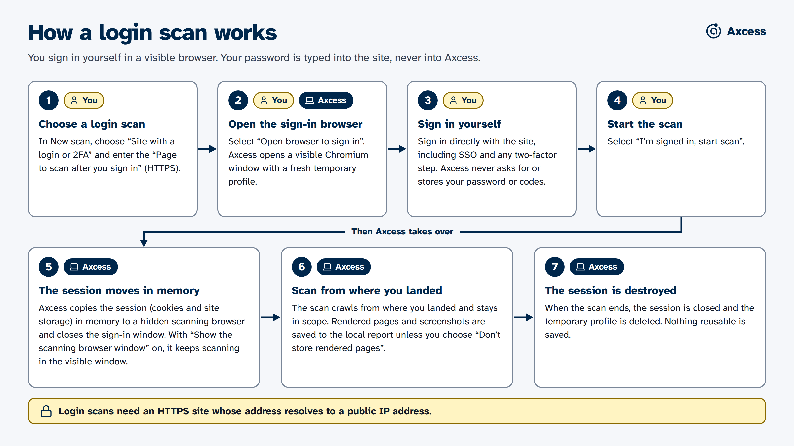

You install it, or you don't
AI-assisted checks need a separately installed local service called Ollama and models you download yourself. Axcess never installs or downloads them silently, and it works without them.
Local-first is not a slogan here. It is the reason Axcess exists: accessibility audits often involve private, sensitive, or login-protected pages, and those should not be uploaded to anyone's cloud.

AXCESS_DISABLE_UPDATE_CHECK=1 turns it off.Many of the pages that matter most are behind a sign-in. Axcess handles this the safe way: you sign in, and it scans with that session.

Step by step: scan a site behind a sign-in.
You stay in control of sign-in. Axcess only continues after you sign in yourself, so use accounts and sites you have permission to test.
AI-assisted checks need a separately installed local service called Ollama and models you download yourself. Axcess never installs or downloads them silently, and it works without them.
Model output is shown as a lead that needs confirmation, with the model's rationale beside the original evidence. It cannot become a confirmed barrier without a person.
The desktop app keeps evidence in the operating system's application-data folder, never inside the app itself. Delete the folder and the evidence is gone.
| Operating system | Data folder |
|---|---|
| macOS | ~/Library/Application Support/Axcess/data/ |
| Windows | %APPDATA%/Axcess/data/ |
| Linux | ~/.config/Axcess/data/ |
Inside: a single SQLite database that is the source of truth, a blobs folder of images and screenshots, and local logs. Logs include the addresses and titles of the pages scanned. Deleting a report keeps its image and screenshot files. Exported files are snapshots, not the record.
Axcess can run on an always-on machine for a trusted team, over a LAN or a private mesh such as Tailscale, behind a shared access token. It must never be exposed as an open public service; anyone with access can point a crawler at any site.
For sensitive university systems, there is a stricter setup that IT runs. People reach it only through an approved university sign-in, evidence is encrypted and deleted after seven days, and exports are controlled. It needs institutional infrastructure and is off by default.
We keep a fixed set of made-up examples, each labelled with the right answer, and score recorded results against it. For every kind of check, fewer than 5% of the results it reports may be wrong, and it must find at least 80% of the real problems in the set. Because the examples are made up, this protects the rules for what counts as a Barrier; it does not measure accuracy on real sites.
It is not a claim that every real website will see the same rate. A real-world accuracy figure would need a fresh, representative sample of real pages, checked independently by at least two accessibility experts. The project says so in writing.